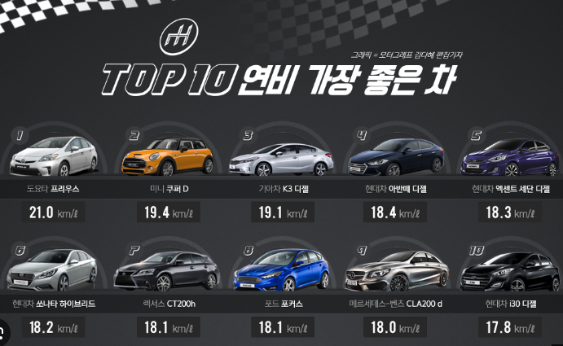
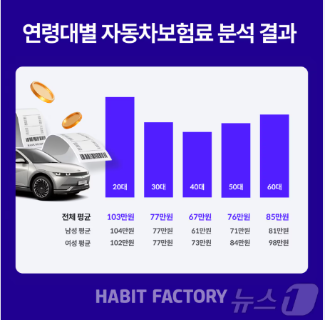
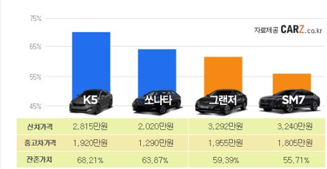
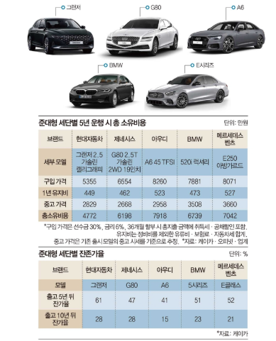
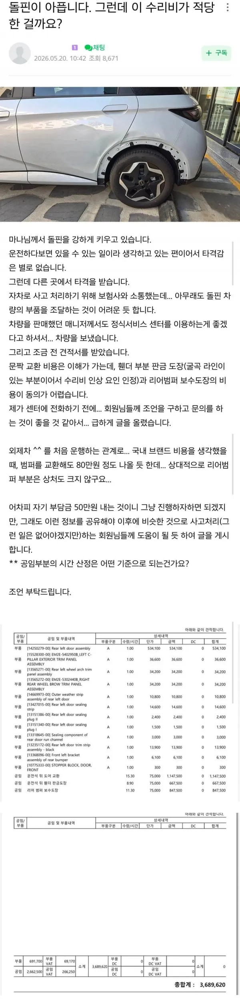
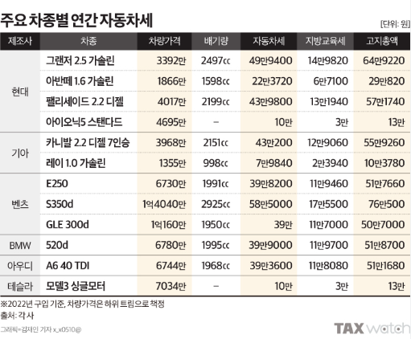

1.연비

2.차량과 나이 사고 유무에 따른 보험료


3.차량 감가
( 유지보수가 잘되는 차일수록 많이 팔린 차일수록 감가 적고 중고 차가격이 비쌈 )
4. 수리및 정비 비용
한국에서는 기본적으로 현기 - 쉐쌍르 순으로 유지비가 비싸지고
독3사 미국 / 프랑스 차량 순으로 수리비가 비쌈
중국차 들은 일단 한국차 보다 는 비싸고
독3사 사이 인데 독3사에 좀더 가까운 정도 예상됨

마지막으로 세금

자동차를 처음 구매하면 당연히 연비가 가장 중요할것 같지만
의외로
감가상각 - 제일 중요함
(전통적으로 수입차 중에 프랑스 미국차-테슬라제외- 가 인기 없는 이유가 감가상각이 엄청나서임)
중국차가 프랑스 미국차 보다 더할꺼 같기는해
연비 - 생각보다 중요하지 않은 경우가 있음 적게 탈수록
의외로 중고차 가격에 영향을 주고
차살때 제일 중요하게 보는 것중에 하나야
2-3키로 부터 중요
1만키로 미만은 그냥 가솔린 사도 괜찮음
보험료 - 사회 초년생이 처음타는 차가 의외로 보험료가 비쌈
아저씨들이 많이 타는 차가 사고가 덜나서 세금이 저렴함
세금 -cc 가 크면 많이 냄
정비 유지보수 비용
순으로 비용이 많이 나감
주차비 - 부동산 비용에 포함되어 있있는 경우가 있고 지역에 따라 굉장히 비싼 경우가 많음
톨비 이거의외로 연비보다 중요함
과태료 솔찍히 10년넘게 10만원도 안내서 나는 그리 중요한게 아닌데 어떠사람한테는 크게 부담됨
대리비 - 술안마시지만 아까울꺼 같기는해
특히 강남에서 술마시고 주차 하고 대리비 쓸꺼면 왠만한 지방 아니면 택시가 더쌈
특히 감가상각은 내주머니에서 안나가서 티가 안나는데
가장 비싼비용을 지불하고 있는 부분이야
같은 국산차인 르쌍쉐 조차 현기랑 비교하면 감가상각이 차원이 다름
수입차는 당연히 감가상각이 차원이 다름
수입차 중에 중국차/ 미국차(테슬라제외 ) / 프랑스차는 정말 차원이 다름
일단 이부분에서 가격이 싸다고 말하기 어려워짐
영국의 경우 감가상각과 잔존가치에 따라서 보험료가 측정되는 구조인데
중국차 들중에 감가상각이 너무 커서 보험이 거절되는 경우가 있고 보험료가 비쌈
지금도 당장 보험료가 저렴하더라도 수리비가 많이 청구되는 순간 보험료가 상상초월로 올라갈
가능성이 높음
나도 몇년동안 현기 까고 다녔는데 진짜 차사고 유지해보니까
사람들이 아반떼 같은차를 가장 많이 타는 이유가 있음
아반떼 샀던 사람들이 소나타 그랜져 순으로 많이 타서 지금그랜져가 제일 많이
팔리는것 같고 아쉽게도 현기가 유지보수 관리 인프라가 가장 좋아서 라고 생각해
벤츠 bmw 도 감가 적은 이유가 그나마 유지보수 관리 인프라가 수입차 치고 잘되어 있기 때문이고
지금 잘팔리는 byd 같은 중국차가 감가상각 보험료 를 포함해서 5년이상 유지해보면
총비용이 결코 싸지 않다는것을 이야기 하고 싶은거야
그리고 중국차 사지 말자는게 아님 진짜 차량 유지비용 차량 가격은 어떻게 되는지 고민해 보고
구매 하자는거야
감가상각 한번 처맞은 중고차는 첫차로 가성비 좋음
댓글
수집 당시 댓글 44개
이게왜진짜임 · 3 일 전
2013년 첫차로 깡통모닝(후방카메라없음, 사이드미러 수동) 타고 다님. 고속도로에서 큰사고도 내보고 이래저래 4년간 장 타고 새차로 sm6 뽑아서 10년째 타는중. 왜 사람들이 현기차 사는지 요즘들어 뼈저리게 느끼는중임. 수리비는 외제차랑 동급취급, 차량감가 개처맞음. 다들 차는 현기차 사라 그게 최고다
marlboro · 3 일 전
별별차 다타봤지만 1 뽑기운(브랜드 좃도상관없음) 2 사고운 3 운전습관. 4 예방정비. 이게 제일크다. 관리 안할거면 걍 좃도 아반떼 옛날거 사서 대충 퍼지면 정비소 갖다주고 수리해주쇼 하면됨.
곽듣퍼 · 3 일 전
아니 글쓴이놈!! 차도 사기전에 현기부터 깠단 말이더냐아아앗!!
BroomVroom · 3 일 전
재규어 에프타입사라 5천밖에 안한다 ㅋㅋ
갸뷰 · 3 일 전
야이 ㅋㅋㅋ 니가 제일나빠
미츠루기 · 3 일 전
세대 사야해서 1.5억 있어야겠네
스네크 · 3 일 전
ㅋㅋㅋㅋㅋㅋㅋㅋㅋㅋㅋㅋㅋㅋㅋㅋㅋㅋㅋㅋ
NewJeans · 3 일 전
작년 12월에 GN7 하브 풀옵 무이자 할부로 뽑았는데 차값 5700 연간 보험료 46만에 세금은 1600cc라 30정도 나올 예정 왕복 40km 거리 출퇴근만 하고 가끔 필요하면 주말에 인근 광역시 백화점, 대형 마트 다녀오는 정도라 진짜 적게 타면 한 달에 주유비 10만 원 정도.. 연료통 50리터에 풀로 채우면 800km 타더라ㅋㅋ 휠 20인치인데도 발컨 대충하면 한겨울만 아니면 21km/l 정도 나옴 감가는 아무래도 수요 많은 차라서 상대적으로 덜 될 거 같음 여러모로 무난바리로 만족
찰칵이 · 3 일 전
그렌저 하브가 진짜 절충안 아닐까싶음 1.6이라 자동차세 싸지 연비 잘나오지 현대라 수리비 저렴하지 근데 이젠 차값이 문제인듯
쉬었음청년 · 3 일 전
ㅅㅂ요즘 전기차사고싶다
흐앙이는흐앙해 · 3 일 전
자동차 유지비 ㅇㄷ
존 메이어 · 3 일 전
첫차로 중고 6.5세대 머스탱 사고싶은데 감가 이미 처먹어서 괜찮나
년째눈팅만함 · 3 일 전
왜 굳이 가시밭길을...
BroomVroom · 2 일 전
겠나요
무례하긴순애야 · 3 일 전
그래서 차 안사고 돈모아서 집 청약함
아이스크림마싯엉 · 3 일 전
솔직히 어따 쳐박지않는이상 신차사서 유지하면 유지비 크게 안드는거같음
클라우드쪼리 · 3 일 전
자동차세 ㅠ 3.8이라 80넘게나옴
피넛버터앤코 · 3 일 전
초년생은 무조건 중고 국산이다
순애만화에미친놈 · 3 일 전
ㄹㅇ
전어세꼬시 · 3 일 전
자동차보험 어릴때 조회해보니 300넘게 나와서 차 포기했는데 이번에 중고차 뽑을려고 조회해보니 100만 정도 나오더라, 운전경력 쌓이면 더 싸질려나?
섹스가뭔데시발 · 3 일 전
운전경력 + 나이+ 차 종류에 따라 많이 낮아짐
전어세꼬시 · 3 일 전
첫운전이다보니 적당한 중고썩차 운전 할려고
섹스가뭔데시발 · 3 일 전
첫차는 그게 맞음
순애만화에미친놈 · 3 일 전
세금 ㅅㅂ
일후회사때려침 · 3 일 전
10년이상 20만~30만 탈생각이면 굳이 감가 안따지고 새차사도 나쁘진않다고 본다
균하하하 · 3 일 전
디젤 미니쿠퍼가 저렇게 연비가 좋았다니 ㄷㄷ 가솔린 3세대 타는데 연비 10~12나오는데..
제니왕 · 3 일 전
일제 미제 독일 국산 다타봤지만 역시 고장안나는 일제가 좋더라. 놀러가다가 서버리면 답이없음
구미베어 · 3 일 전
생각보다 정비비용이 의외로 많이듬 타이어, 엔진오일, 브레이크패드 이런건 사실 주기적으로 나가야하는거라 조금씩 모아두는데 에어컨,미션오일같은거나 베터리나 그런거 나가면 또 3~40은 우습게나가니까 처음계산보다 연에 200정도는 더 나가더라
익명
우리차 10년넘어서 정비 많이 하는데 그정도 아니던데 일년에 50정도가 적당한것 같다 ㅜㅜ
구미베어 · 3 일 전
내가 주행거리가 길어서 그럴수도있음 디젤차인데 매일 출퇴근 왕복100키로정도 나오고 중간에 여자친구만나거나하면 왕복5~60키로 추가되니까 dpf클리닝이나 그런게 좀 이슈가 많음 작년에 중고로 산거라 아직 표본이 적기는 함
익명
형님 전기차 고고
철학전공자 · 3 일 전
아온5( 30만)vs 디올뉴니로 (10만) 가격같음 ㄷㅈㄷㅎ?
구미베어 · 3 일 전
안그래도 돈모이면 전기차중고 생각중 ㅠㅠ
개엄하다 · 3 일 전
경차가 남바완
베이비치즈 · 3 일 전
현기는 진짜 정비 수리가 넘사긴 함
딜도잘넣는사람 · 3 일 전
돈 생각하면 차타면 안되긴함 ㅋㅋ
에스비오피 · 3 일 전
그냥 사람들이 산다면 뜯어 말리는 차들만 안 사면 됨. 쌍용, 포드, 르노 같은 거.
ㅠㅗㅣㅏㅜㅗ · 3 일 전
그래서랜드로버를ㄹㄹㄹㄹㄹ
즈기 · 3 일 전
랜드로버는 예쁘긴 예쁨 예쁜값을 엄청해서문제지
에스비오피 · 3 일 전
랜드로버는 성병 걸린 미녀 같은 차임.
냉동블루베리 · 3 일 전
이래서 소나타가 우주명차구나
행복드립넷 · 3 일 전
외제차(독일차) 사고싶으면 감가상각 개 뚜들겨맞은 매물 금융리스로 사라. 연식 1~2년 된 걸로. 그렇게 사면 본문에서 말하는 초기 감가상각 대부분 헷징됨. 취득세까지도. 거기에 워런티 연장 하고 타면 됨. 나 같은 경우 24년식 q8 타는데 워런티 32년까지 늘려놔서 크게 걱정 안 함 독일차를 쌩 신차 출고 하는 사람들은 돈 썩어나는 사람들임... 부럽다...
즈기 · 3 일 전
도요타 올해까지만 서비스라 이후주문하면 수리받는거 가장빠른게 2주일텐데
슈퍼앵그리 · 2 일 전
찐 팁주자면 남자는 첫차 경차타지마라. 1년안에 최소 준중형으로 바꾸게되어있다. 그러면 거기서 발생하는 매몰비용이 몇백이다. 얼마나아깝노. 경차타서 오래탈수잇는남자는 가정이루고 세컨차로 경차타고다니는 사람밖에읍다. 남자는 경차를 몰 성질머리가안됨.